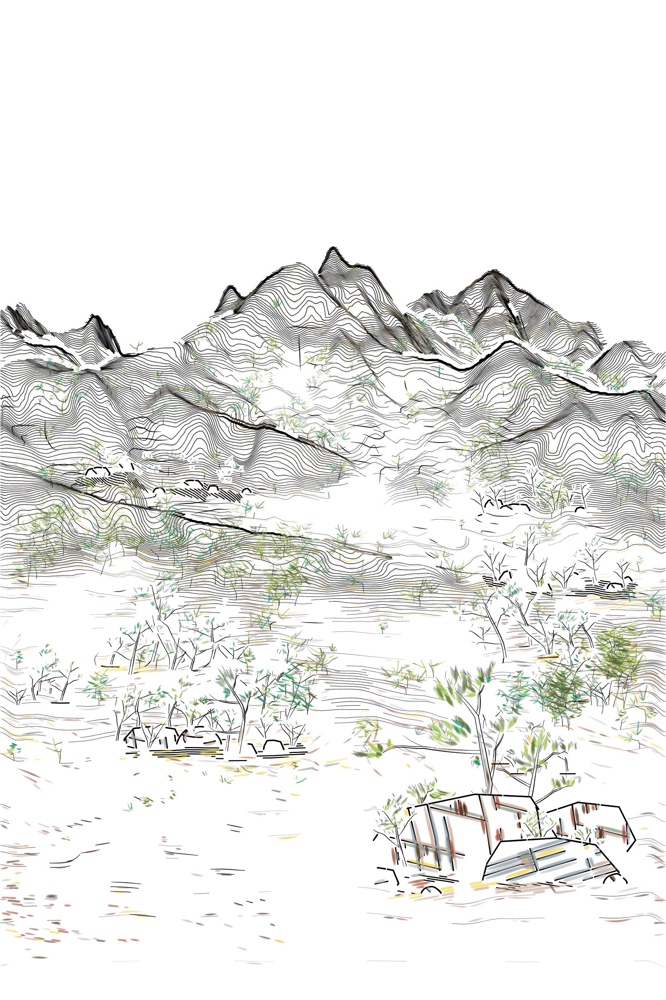
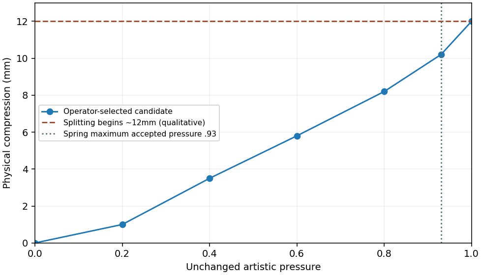
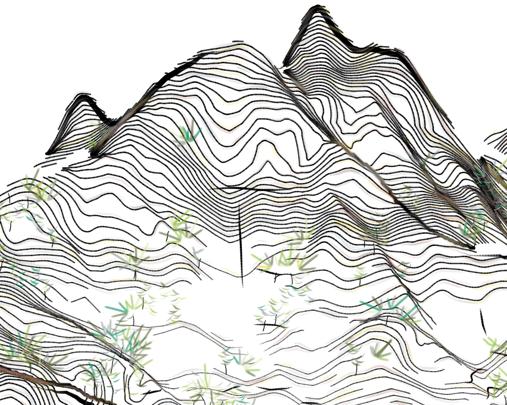
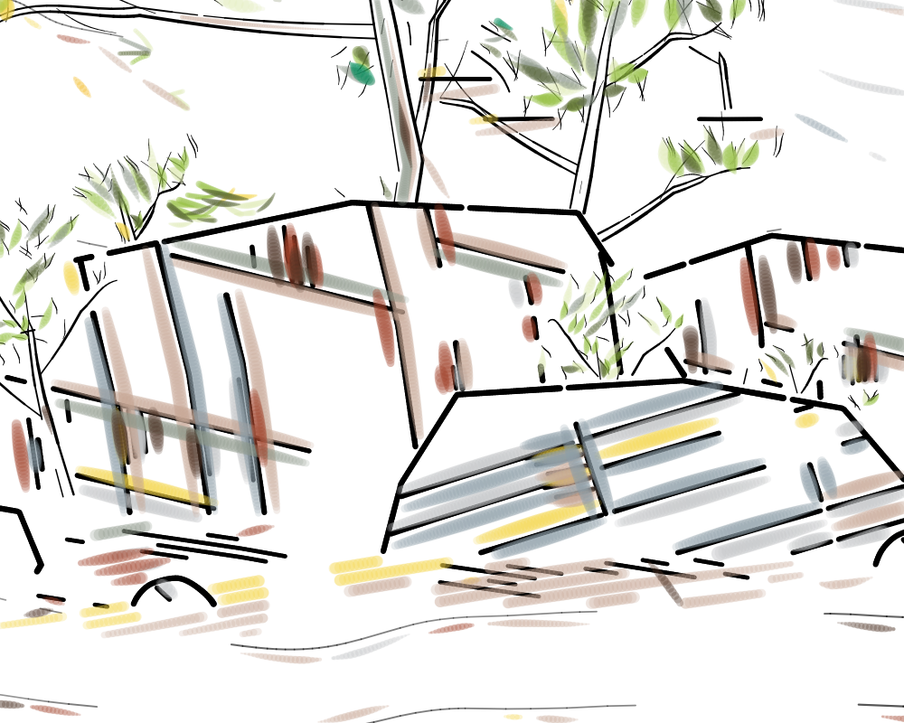
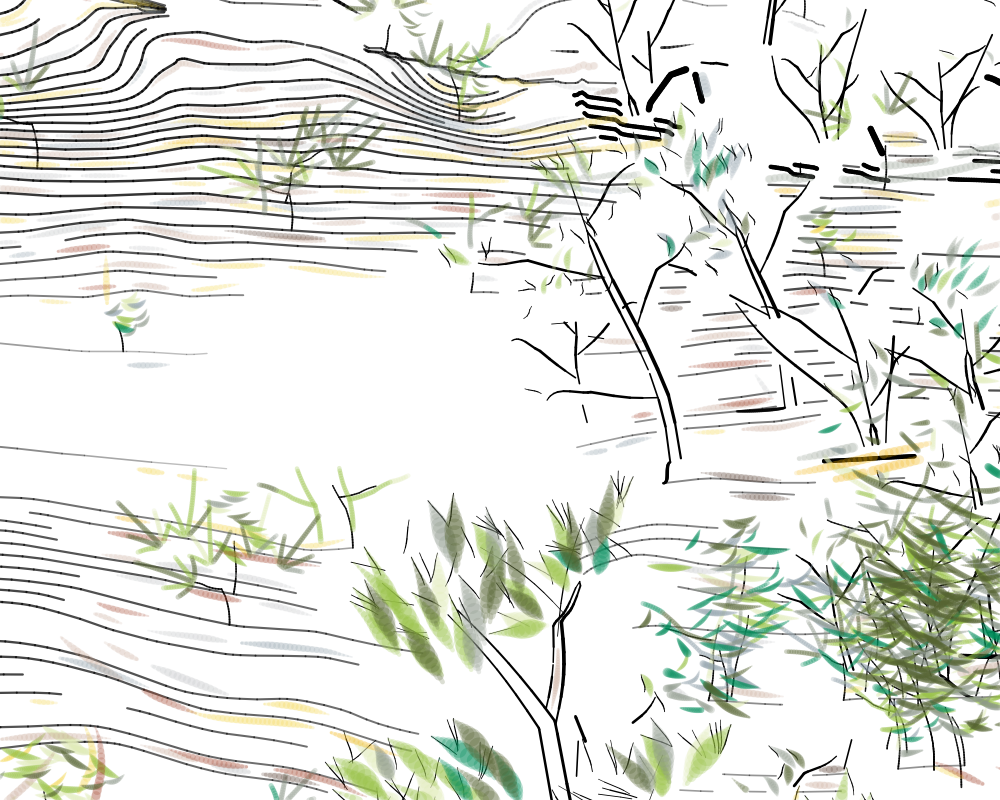

14951 unsplit strokes /240974 accepted pressures /F2-C v13 /Layout D /unchanged S3a and twelve colors.
Width proxy is illustrative, NOT measured stroke width or ink diffusion: authored width ×(0.35+compression/4mm). Canonical-width view preserves the original authored width/opacity. Semantic depth colors: purple0mm to yellow12mm; actual accepted Spring range stays below10.2mm.





Paper first-touch10; relative hover10→absolute20; approach+5→15; global35. Numeric review files remain separate from physical machine authorization.